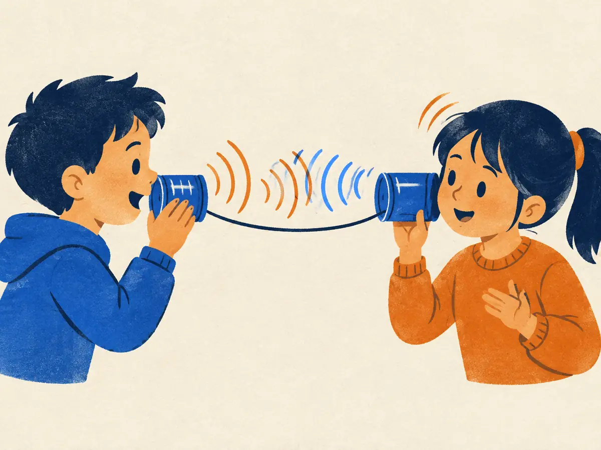

Real-time speech-to-speech models
In conversation, people reply within a fraction of a second and talk over each other all the time. A voice assistant that waits, thinks, then speaks feels robotic. This lesson builds the classic cascade, adds up its latency, then looks at models that listen and speak at the same time.
By the end you can
- Draw a cascaded voice assistant (ASR → LLM → TTS) and compute its response latency from a stage budget.
- Explain how end-to-end and full-duplex speech models (such as Moshi) remove stages, and what they gain and lose.
- Describe turn-taking, interruptions and the main difficulties in evaluating voice agents.
Guess first; you'll check below.
In everyday conversation, roughly how long is the typical gap between one person stopping and the other starting?
- About 200 milliseconds
- About 2 seconds
- About 5 seconds
- There's never any overlap or gap
Besides speed, what does a pipeline of speech-to-text, text LLM, then text-to-speech lose?
- Nothing; text captures everything in speech
- The ability to answer questions
- Tone, emotion, emphasis, laughter and who is speaking, since only text passes between stages
- The ability to use more than one language
The cascade: ASR → LLM → TTS
Voice assistants have been pipelines since Siri (2011) and Alexa (2014): recognize the words, decide what to do, speak a reply. The LLM era kept the shape and upgraded the middle. When ChatGPT added voice in 2023, it chained a speech recognizer, the text model and a TTS model. OpenAI later reported that this Voice Mode had average latencies of 2.8 seconds with GPT-3.5 and 5.4 seconds with GPT-4.
A cascade has four moving parts:
- Voice activity detection and endpointing: decide that the user has finished, usually after a stretch of silence.
- ASR (A1.2): turn the audio into text.
- LLM: generate a reply as text, token by token.
- TTS (A1.4): turn the reply into audio and play it.
Cascades are popular for good reasons. Each part can be swapped for the best available one, including the strongest text LLM; the text in the middle is easy to log, filter and inspect; and tools, retrieval and safety checks plug in where they already work for text. But two costs are built in:
- Information loss. Only words cross the text bottleneck. Tone, emphasis, hesitation, laughter, background sounds and speaker identity are gone, so the LLM can't hear that you're upset, and the TTS has to guess how to say the reply. Recognition errors also propagate: the LLM confidently answers a question you didn't ask.
- Latency. The stages add up, as the next byte shows.
A user says "Oh, great" sarcastically after a failed request. Why might a cascaded assistant respond cheerfully?
- Because TTS can only produce happy voices
- Because the LLM only receives the transcript "Oh, great", without the sarcastic tone
- Because ASR can't transcribe short phrases
- Because endpointing cut off the audio
A latency budget, worked out
What users feel is the time from when they stop talking to when they hear the first sound of the reply. In a cascade, the stages on that path add up:
$$t_{\text{response}} = t_{\text{endpoint}} + t_{\text{ASR}} + t_{\text{LLM, first token}} + t_{\text{TTS, first audio}} + t_{\text{network}}$$$t_{\text{endpoint}}$ is the silence the system waits for before deciding you've finished; $t_{\text{ASR}}$ is the time to finalize the transcript; the LLM term is its time to first token (M5.6), plus however much text the TTS needs to start; $t_{\text{TTS, first audio}}$ is how long TTS takes to produce its first chunk of sound; $t_{\text{network}}$ covers round trips between device and servers.
The numbers below are illustrative, picked to be in a plausible range; real values depend heavily on models, hardware, load and network.
Worked example
- Endpointing: wait for 500 ms of silence.
- ASR finalizes the transcript: 100 ms.
- LLM time to first token: 300 ms.
- TTS time to first audio: 150 ms. Network: 100 ms.
- Total: $500 + 100 + 300 + 150 + 100 = 1{,}150$ ms, more than five times a typical 200 ms human gap. Notice the biggest single term is waiting, not computing.
Engineers shrink this by streaming every stage: transcribe while the user is still talking (so ASR finishes almost as soon as they stop), start the LLM on partial transcripts, stream LLM tokens into a TTS that starts speaking after the first phrase, and keep connections open. The endpointing wait is the hardest: shorten it and the assistant interrupts people who pause mid-sentence; lengthen it and everything feels slow. Smarter turn detection models, which judge from the words and intonation whether a turn is finished, help here.
Playground: build your own latency budget
Each bar starts where the previous stage ends. Try the presets, then see which single change helps most. The dashed line marks a typical human turn gap of about 200 ms.
A tuned cascade: endpointing 300 ms, ASR 80 ms, LLM first token 250 ms, TTS first audio 120 ms, network 60 ms.
- Total response latency in ms:
- How many times a 200 ms human gap is that?
- If endpointing alone dropped to 100 ms, the new total in ms:
Why not just set the endpointing silence to 50 ms?
- Because ASR can't run that fast
- Because it would increase network latency
- Because the LLM needs at least 1 second of audio
- Because people pause mid-sentence; the assistant would keep cutting them off
End-to-end and full-duplex: GPT-4o and Moshi
The alternative is to let one model hear and speak directly, using audio tokens (A1.3) or audio features as input and audio tokens as output. Research systems explored this from 2021 (speech-only "textless" language models, then LLMs extended with speech tokens).
GPT-4o (OpenAI, May 2024) brought it to a mainstream product. OpenAI described it as a single model trained end to end across text, vision and audio, and reported audio response times as low as 232 ms, with an average of 320 ms, similar to human response times in conversation. OpenAI hasn't published the architecture, so how it represents audio internally is not public.
Moshi (Défossez et al., 2024, Kyutai) is a fully described open model, and it goes one step further: it is full-duplex. Instead of taking turns, it models two audio streams at once, the user's and its own, at every 80 ms frame. Its parts:
- Mimi (A1.3): a streaming codec at 12.5 frames per second with 8 codebooks per stream.
- A temporal Transformer, built on a 7-billion-parameter text LLM (Helium), steps through time one frame at a time; a small depth Transformer then predicts that frame's codebook tokens one after another. This split handles many tokens per frame without making the time axis longer (compare MusicGen's delay pattern in A1.5).
- Inner monologue: at each frame Moshi also predicts the text of its own speech, time-aligned, just before the audio tokens. Thinking in text first improves the linguistic quality of what it says.
Because it is always listening and always producing output (silence is just more tokens), Moshi needs no endpointing: it can start replying as you finish, say "mm-hm" while you talk, and stop when interrupted. The paper reports a theoretical latency of 160 ms (an 80 ms frame plus 80 ms of acoustic delay) and about 200 ms in practice on an L4 GPU.
Explain like I'm 5

Two kids talk through tin-can telephones. An old-style robot friend would wait until you stop, count to three in its head, write down what you said, think, then read its answer out loud. Slow!
A full-duplex robot is like a real friend: it listens and talks on the same string at the same time. It nods "uh-huh" while you're still talking and starts answering right as you finish, and if you cut in, it stops and listens.
Where it breaks: the robot doesn't really understand you like a friend does, and listening all the time means it sometimes jumps in too early or talks over you.
What makes Moshi "full-duplex"?
- It models the user's audio stream and its own audio stream simultaneously, at every frame, so it can listen while speaking
- It uses two separate LLMs
- It transcribes the user's speech twice for accuracy
- It replies in two languages at once
Turn-taking, interruptions and evaluation
Real conversation is messy, and the hardest problems in voice agents are about timing, not words:
- Turn-taking: knowing when the user has finished. Cascades use endpointing, increasingly with a learned turn detector; full-duplex models learn it from conversational data.
- Barge-in (interruptions): when the user starts talking over the assistant, a cascade must detect speech during playback, stop the audio, cancel generation, and record in the conversation history only the part of the reply that was actually heard. Full-duplex models handle it natively, but can also interrupt the user too eagerly.
- Backchannels: the "mm-hm", "right" that show you're listening without taking the turn. Cascades rarely produce them; duplex models can.
- Streaming everywhere: every component must work on partial input and produce partial output, or it becomes the bottleneck.
Evaluating voice agents is harder than evaluating text models, and as of 2026 there's no single accepted benchmark. Teams typically combine:
- Content quality: transcribe the spoken answers and score them with text benchmarks or LLM judges (M4.4). This misses how it was said.
- Speech quality: naturalness ratings (MOS) and ASR word error rate on the output (A1.4).
- Latency: time from end of user speech to first audio, measured end to end on real networks, reported as a distribution (median and tail), not one number.
- Interaction behaviour: how often it interrupts, how fast it yields when interrupted, whether it backchannels. Newer research benchmarks target full-duplex behaviour specifically, but methods are still settling.
Safety also changes with voice: a speech model could imitate voices, including the user's, so products commonly restrict outputs to a set of preset voices and add classifiers to catch deviations (A1.4).
A user interrupts a cascaded assistant halfway through a long answer. Besides stopping playback, what should the system record in the conversation history?
- The full answer the LLM generated
- Nothing from the assistant's turn
- Only the part of the answer that was actually played before the interruption
- The user's interruption, but not the answer
Explain why a cascaded voice assistant feels slower than a person, and how a full-duplex model like Moshi changes that.
A cascade has endpointing 400 ms, ASR 100 ms, LLM first token 350 ms, TTS first audio 200 ms and network 50 ms. What is the response latency?
- 350 ms
- 1,100 ms
- 1,050 ms
- 700 ms
Moshi's temporal Transformer steps through 80 ms frames, and a small depth Transformer predicts each frame's codebook tokens. Which earlier idea solves the same problem?
- CTC's blank token (A1.2)
- Whisper's 30-second windows (A1.2)
- FAD's Gaussian fit (A1.5)
- MusicGen's codebook delay pattern (A1.5)
What did OpenAI report about GPT-4o's audio response latency at launch?
- As low as 232 ms, about 320 ms on average
- About 5.4 seconds on average
- Exactly 0 ms, because it predicts the end of your sentence
- Nothing; no latency figures were given
The LLM in a cascade streams its reply token by token. Which serving metric from M5.6 matters most for when the user first hears audio?
- Total tokens per second across all users
- The model's parameter count
- Time to first token (plus enough tokens for TTS to start)
- Time to generate the full reply
Key takeaways
- A cascade (endpointing → ASR → LLM → TTS) is modular and inspectable, but loses tone and adds latency.
- Latency $= t_{\text{endpoint}} + t_{\text{ASR}} + t_{\text{LLM first token}} + t_{\text{TTS first audio}} + t_{\text{network}}$; streaming every stage and smarter turn detection cut it.
- End-to-end models (GPT-4o: 320 ms average reported) and full-duplex models (Moshi: two streams, ~200 ms reported) listen and speak in audio directly.
- Turn-taking, barge-in and backchannels are the hard parts; evaluation combines content, speech quality, latency distributions and interaction behaviour.
Add this lesson's cards to your spaced-review deck.